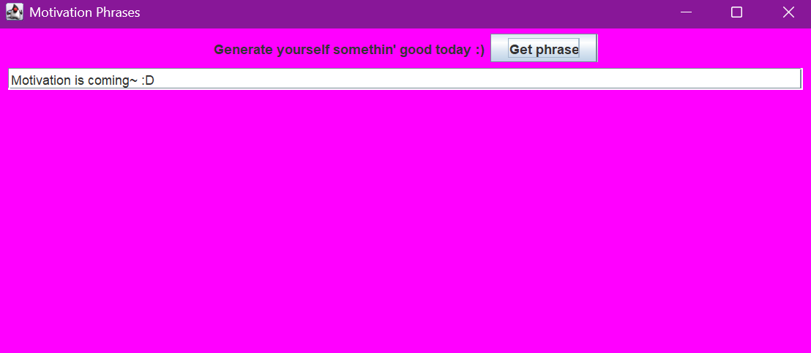
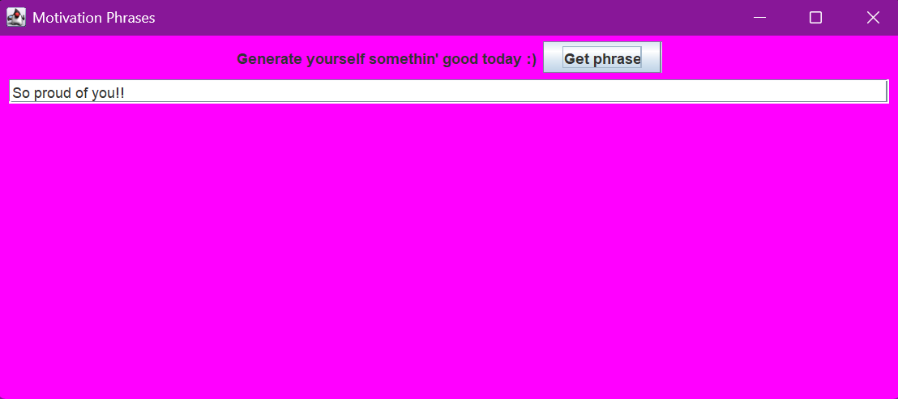

Motivational Texts
This page is still under construction too, I'm just drafting things out.
A text generator that pulls texts from an array of quotes said by people I know, as well as ones that I've written myself. This project has been made using multiple engines, in order to test and learn better coding skills. Currently, this generator exists in Java and Godot. There's hope to create it in app form and webapp form.
This idea was coded from a simple request from a request from a friend:
“Can you code a lil widget/app for a phone somehow that has motivation short texts that show up. Kinda like Co-star, but not focused on zodiac stuff. Just, like, motivational stuff. Like, the little widget for Co-Star today says "No self-denial, today" and that's been keepin me perky fr.” Because I've coded a few generators over time, I decided to jump right into working on the code.
To start, I drafted up what the code would look like in Java and Godot. After that, I created the GUI version of Motivational Texts in Java. The textbox’s starting text is “Motivation is coming :D”. Honestly, the color and layout of the GUI is simple (and hard on the eyes), but it was the start of this project. I hope to come back to this version of the project and make a more cooler and stylized GUI.
<

Next, I went over to Godot and imported the code I drafted up.
I created the textbox using Procreate and Inkscape; the drawing was made in Procreate, then I used Inkscape to get the frame around it.